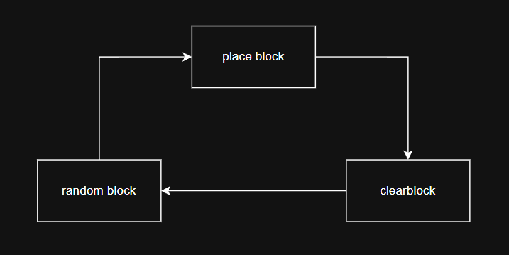
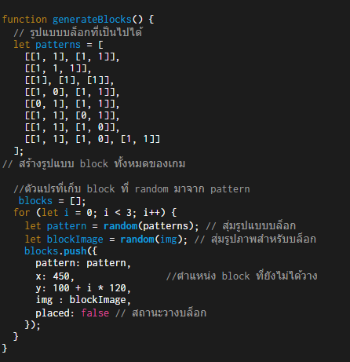
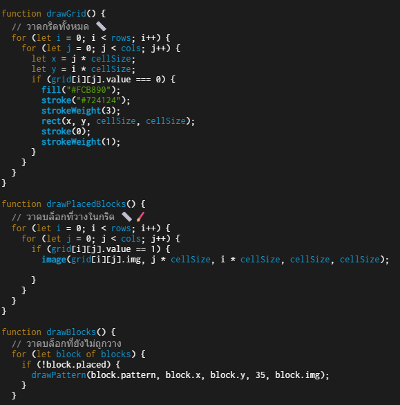

Destroy Block
Game in class
Made with P5js (JavaScript)
Dev by: Teerapuwanai Chanachaisombud , Puwadon Sunreem
destroyblock

Features
Function generateBlock
Create an array to store all possible block patterns. Once all generated blocks have been used (checked via the 'placed' variable), a new set of blocks will be automatically re-generated.


Function drawGrid , drawPlacedBlocks , drawBlocks
